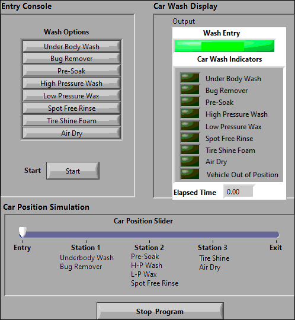
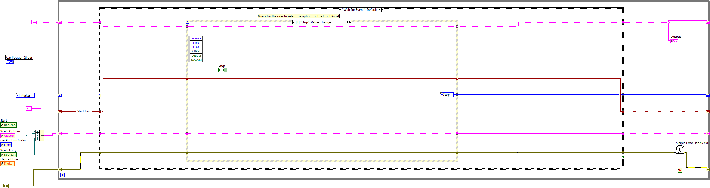
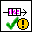
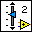
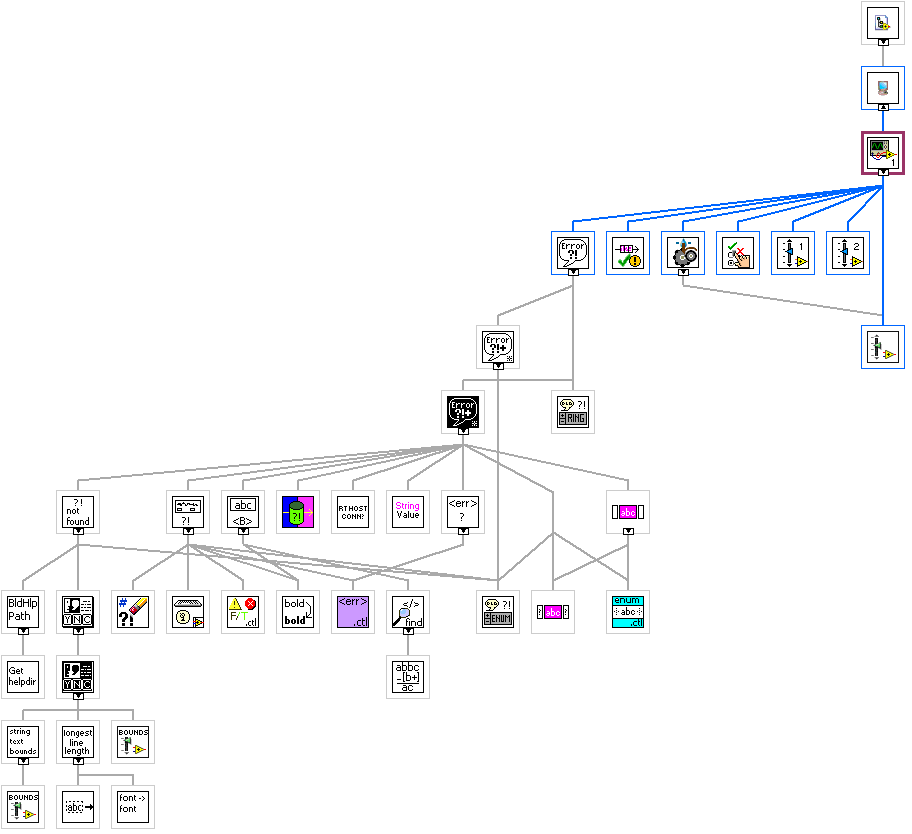

Car wash
Wash entry : indicate empty or in use
User selects car wash options
Start option
Car wash indicator shows current step in car wash
shows the elapsed time on indicator
Vehicle out of position indicator -> elapsed timer pause
Program start
All controls enabled
Wash entry green
-> Wash vacant
All wash indicators turned off; elapsed time =0
Car position slider Entry
Selects wash options
High pressure is the default
Start -> starts the selected car wash options one by one
Should disable all the wash options after start
Wash entry LED red -> Wash in Progress
Check if the car is in position
Upon completing car wash step; if car is in position, go to next car wash step
Once all car wash steps are complete, vehicle out of position should turn green. User moves car position slider to exit car wash indicators off
Car position slider -> Entry
Wash entry green and wash vacant
Wash entry cinsole options enabled


|
Simple Error Handler.vi C:\Program Files (x86)\National Instruments\LabVIEW 2024\vi.lib\Utility\error.llb\Simple Error Handler.vi |
|
|
 |
Check Vehicle Position.vi C:\Users\AATPR\Downloads\Labview\cld_sample_exams_english\Car Wash (100929B-01)\USB Template (LV 8.6)\Car Wash\SubVIs\Check Vehicle Position.vi |
|
|
Car Wash Indicators.ctl C:\Users\AATPR\Downloads\Labview\cld_sample_exams_english\Car Wash (100929B-01)\USB Template (LV 8.6)\Car Wash\Controls\Car Wash Indicators.ctl |
|
Find next car wash step.vi C:\Users\AATPR\Downloads\Labview\cld_sample_exams_english\Car Wash (100929B-01)\USB Template (LV 8.6)\Car Wash\SubVIs\Find next car wash step.vi |
|
|
|
States.ctl C:\Users\AATPR\Downloads\Labview\cld_sample_exams_english\Car Wash (100929B-01)\USB Template (LV 8.6)\Car Wash\Controls\States.ctl |
|
 |
Wash Options.ctl C:\Users\AATPR\Downloads\Labview\cld_sample_exams_english\Car Wash (100929B-01)\USB Template (LV 8.6)\Car Wash\Controls\Wash Options.ctl |
|
Enable Disable Controls.vi C:\Users\AATPR\Downloads\Labview\cld_sample_exams_english\Car Wash (100929B-01)\USB Template (LV 8.6)\Car Wash\SubVIs\Enable Disable Controls.vi |
